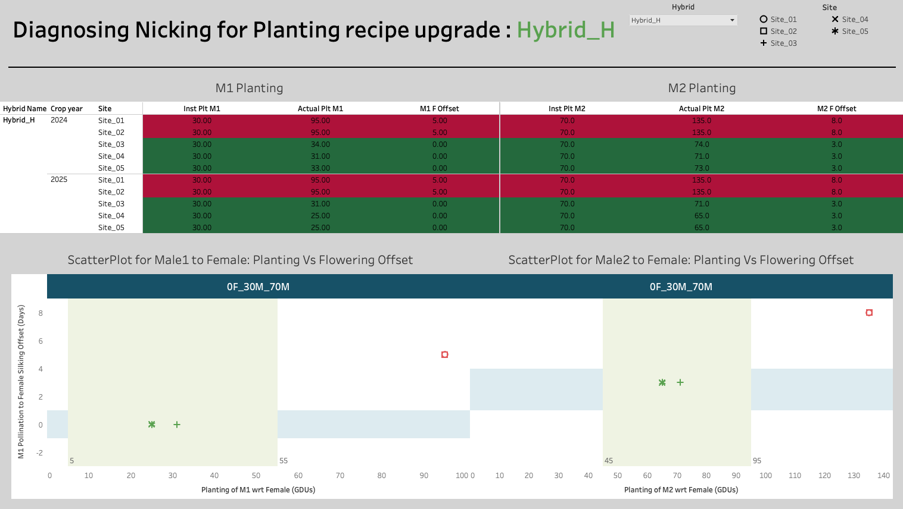

White Paper: Architectural Synchronization
Domain Focus: Agricultural Supply Chain & Decision Architecture
Key Technologies/Methodologies: Python, Tableau, Statistical Analysis, A/B Testing, Strategic Thinking, Storytelling
The Executive Summary: The Efficiency Paradox
In complex operational systems, success is a function of Temporal Alignment. Whether coordinating the “Handshake” between an encrypted payment gateway and a banking ledger or synchronizing the pollination window in a hybrid seed field, a fractional misalignment represents a binary outcome: systemic success or total loss.
This paper addresses the Efficiency Paradox: the phenomenon where high-precision data collection creates a cognitive bottleneck for human experts. We explore a strategic pivot from Forensic Data Discovery to Prescriptive Decision Architecture, moving beyond “Information Visualization” toward “Automated Insight.”
The Problem: The High-Volume Synchronization Gap
In the global seed industry, the core operational challenge is Nicking—the precise synchronization of pollen shed (Male) and silking (Female).
The Biological Constraint
Research from the CIMMYT International Maize and Wheat Improvement Center confirms that maize pollen viability is a high-sensitivity variable. Under environmental stress, the “Golden Window” for fertilization is measured in hours.
The Operational Scale
A global leader manages thousands of parent-line combinations across diverse geographical sites. Traditionally, these are managed via Exploratory Visuals—specifically high-density scatter plots that display every trial as an individual data point.

The Critical Flaw: This “Exploratory Default” creates a high Cognitive Tax. An expert must manually:
- Isolate “Execution Error” (Late planting) from “Instructional Bias” (Inaccurate recipe).
- Correlate independent variables (Multiple Male events) across disjointed panels.
- Perform mental math to calculate the required adjustment for the following season.
The Methodology: Isolating the Signal
To resolve this, we move from Visual Description to Statistical Prescription. We apply a two-stage filter to isolate the “Special Cause Variation” (the systemic bias).
- The Compliance Filter (Execution vs. Biology)We cannot optimize a “Recipe” (Planting Instruction) if the field execution was flawed. We calculate the Operational Compliance (\(\Delta_{Op}\)): \[\Delta_{Op} = |Actual_{Planting} - Target_{Instruction}|\]
We only advance data where \(\Delta_{Op} \le 25 \text{ GDU}\). This ensures our recommendation is based on Biology, not human error.
- The Nicking Variance (\(\Delta_{Nick}\)) For the compliant sites, we calculate the delta between the Peak Pollination (\(P_{50}\)) and Peak Silking (\(S_{50}\)): \[\Delta_{Nick} = P_{50} - S_{50}\]
The Strategic Solution: Prescriptive Architecture
Instead of a library of scatter plots, we architected a Ranked Variance Dashboard. This tool utilizes Management by Exception (MBE) to surface only the parent lines that require a “Recipe” update.
The “After” Visual Strategy:
- The Primary Interface: A Diverging Bar Chart ranking Hybrids by their Mean \(\Delta_{Nick}\).
- The Integrated Context: Rather than split-screen views, we use a Unified Pollination Bar that shows the total coverage window (M1 to M2) relative to the Female 0-line.
- The Recommendation Engine: The dashboard does not just show the error; it prescribes the shift.
The Calculation Logic: If \(\Delta_{Nick} > 1.5\) days (Male is Late), the system triggers a Prescriptive Alert: \[New\_Instruction = Current\_Instruction - (\Delta_{Nick} \times \bar{GDU}_{daily})\]
Results: From Forensics to Strategy
By reframing the tool as a Decision Engine, we achieved three critical business outcomes:
- Reduction in Decision Latency: By automating the “search” for outliers, the expert’s role shifted from Discovery to Validation.
- Portfolio Reliability: We identified “Marginal Drifters”—hybrids that were consistently close to failure but ignored in legacy views—and applied safety buffers to their recipes.
- Cross-Regional Synchronization: The data-driven recommendations removed the “Subjectivity Variance” between different regional site managers.
Generalization: The Universal Principle
The strategy used here is a direct application of the Information Supply Chain principle. This architecture applies to any domain where high-volume events must be synchronized:
Fintech Example: Payment Gateway Latency
Consider a global payment processor like Stripe or PayPal.
- The Problem: A transaction requires three independent events to “nick” within 2 seconds: The Merchant Request, the Fraud Analysis, and the Bank Authorization.
- The Forensic Way: Looking at thousands of logs to see where “timeouts” occur.
- The Prescriptive Way: Building a Latency Variance Engine. If the “Fraud Analysis” step is consistently lagging by 200ms in a specific region, the system shouldn’t just show a red bar—it should automatically reroute traffic to a secondary server or adjust the timeout threshold dynamically to prevent transaction abandonment.
Conclusion: Designing for Action
Data visualization is often treated as the end of a process. In this white paper, we treated it as the start of an action. True leadership in analytics isn’t about the quantity of data visualized; it’s about the quality of the decision it enables. By taking a step back and evaluating the Strategic Intent before the Visual Design, we turned a complex biological hurdle into a streamlined, competitive advantage.
Technical Appendix
Tools & Technologies
- Visualization & Analysis: Tableau
- Languages: Python
- Database: CSV